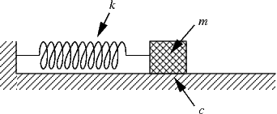

Math 250 - Higher Order Linear Differential Equations
Warmups
What is the solution to \(x'' + 25x =0, x(0)=1,x'(0)=0\)?
Find \(C\) and \(\alpha\) such that \(A \cos(\omega t) + B \sin(\omega t) = C \cos(\omega t - \alpha) \).
What are the three families of terms we can consider when using the Method of Undetermined Coefficients? Why?
What is the behavior of a mass-spring system with \(m=2, k=4, b=1\)? Find and sketch a solution \(x(t)\) and classify the system as over,under,or crtitically damped.
TBD
Example 1 - Higher order vs 1st order
Consider the DE \(y'' - 2y' + 5y =0\).
Label this DE.
Let \(y' = w\). Write the DE above as a system of first order differential equations for \(y\) and \(w\).
Label your system created above.
Can you write the system \(y''' + 3y'' + 4y' + 12 y = 0\) as a system of first order DEs? How many equations would you need?
Think about why this idea might be important and write some thoughts in your notebook.
Example 2 - Mass spring systems

Consider the mass-spring system above (moving on a frictionless table). A DE governing the displacement from equilibrium, \(x(t)\) is
$$m x'' + b x' + k x = 0.$$
Explain where this DE comes from. What does each term mean?
Label this DE.
Consider the undamped system, i.e. \(b=0\). Let \(m=1\) kg and \(k=16\) N/m. Assume the spring is stretched 0.5 meters and released from rest. What is the displacement \(x(t)\)?
Now consider the system above but with damping. At what values of \(b\) do any oscillations disappear?
Consider the system above with arbitrary parameter values \(m,b,k\). What is the relationship between \(m,b\), and \(k\) that gives rise to oscillations? What is this phenomena called?
When do we say the system is critically damped? What does this mean?
Many systems display behavior that can be described with a DE very similar to the mass-spring system, including the RLC circuits we have seen already. We call the DE the simple harmonic oscillator.
Fill in the chart below showing the comparisons between the mechanical mass-spring and electrical RLC circuit systems.
mass- spring sytem
Circuit
Equation
Equation
Element
Symbol
Force/term
Element
Symbol
Voltage Drop/term
Example 3 - Undetermined Coefficients
Consider the DE for \(y(x)\)
$$y'' - y' - 2y = f(x)$$
for various functions \(f(x)\.
What is the general solution to the associated homogeneous equation?
Let \(f(x) = 3x^2 - 1\). To find a particular solution to the nonhomogeneous equation we will use the method of undetermined coefficients with the form \(y_p = Ax^2 + Bx + C\).
Explain why we chose this form. Plug \(y_p\) into the DE and determine \(A,B,\) and \(C\).
Now let \(f(x) = 2e^{-3x}\). Find \(y_p\) using the method of undetermined coefficients. What form of \(y_p\) should we choose?
Repeat if \(f(x) = 2 \cos(3x)\).
What if \(f(x) = x^2 e^{x}\)?
Example 4 - Undamped example (remembering trigonometry)
Consider an undamped mass spring example with \(m=1,k=9,x(0)=1,x'(0)=2\). What is the amplitude and period of the resulting motion/displacement?
Example 5 - Forced mechanical system
Consider a damped mass spring system \(m=1, b=2, k = 3\) suspended from a ceiling. Let the acceleration due to gravity \(g=9.8\), i.e. the in the postive direction of displacement.
What is the DE that governs this system?
Label this DE.
What is the general solution to the associated homogeneous equation?
What is a particular solution?
What is the general solution?
What is the long term behavior, i.e. as \(t \to \infty\)?
Example 6 -More undertermined coefficients
Consider the DE \(y'' - y' - 2y = 5e^{2x}\).
What is the general solution to the associated homogeneous equation, \(y_h\)?
What do you notice about the RHS of the DE and \(y_h\)?
What form should we choose for \(y_p\) when using the method of undertermined coefficients?
Find \(y_p\).
Where did the form for \(y_p\) come from? Try to explain using operator ideas from last week.
Example 7 -
Find the general solution to the DE below.
$$ y''' + y'' = 3e^x + 4x^2$$